Data Science & Machine Learning
Problem framing, exploratory analysis, feature engineering, baseline-to-advanced supervised modeling, and robust validation design to ensure reliable, evidence-backed decisions.
I am MarkPaul Chege
I build end-to-end data workflows from exploratory analysis and reproducible modeling to AI-powered insights, prediction systems, and dashboard-ready decision support.
End-to-end data science and AI services from business framing and dataset design to model validation, deployment readiness, and insight communication.
Problem framing, exploratory analysis, feature engineering, baseline-to-advanced supervised modeling, and robust validation design to ensure reliable, evidence-backed decisions.
Reusable notebooks and scripts, reproducible training pipelines, metric tracking, and documentation-first handoffs that make model workflows easy to maintain and audit.
Designing predictive and AI-assisted systems for classification, churn/risk detection, time-series forecasting, and recommendation-style decision support use cases.
Building KPI-first dashboards for operations, finance, and product teams to track trends, segment behavior, and performance drift with clear business context.
I'm a data scientist focused on AI and machine learning. I hold a Bachelor's degree in Computer Science from Kabarak University, with Python certifications and ongoing certifications in data science, AI, and machine learning.
Over 1+ year, I have built practical projects in predictive modeling, dashboard analytics, and model performance evaluation with a focus on clarity, business relevance, and measurable outcomes.
Define the prediction or decision surface, leakage risks, constraints, and the metric that actually matters.
Bias–variance intuition, sober baselines, and validation you trust before scaling complexity.
Package artifacts for engineering handoff, expose APIs thoughtfully, and keep operations observable.
Data science, AI, and machine learning skills for analysis, modeling, and decision intelligence.
Applied machine learning and AI case projects demonstrating problem definition, feature strategy, model selection, and decision-focused outputs.
Production-style ETL workflow for extracting raw operational data, applying validation and transformations, and loading analysis-ready datasets for dashboards and machine learning tasks.
Case study soonEnd-to-end churn prediction workflow using feature engineering, class balancing, and model comparison (Neural Network vs XGBoost) to identify high-risk customers and support retention strategy.
Case study soonMachine learning pipeline for insurance pricing estimation using demographic and risk features, with emphasis on generalization, model calibration, and interpretable cost drivers.
View on GitHubUrban transport intelligence project that combines route logic, fare estimation, and contextual analytics to improve commuter decision-making and trip planning confidence.
View on GitHubExecutive-ready dashboard tracking revenue, product mix, and operational trends across business units with drill-down views for month-over-month performance diagnostics.
Case study soonModel monitoring interface for tracking drift, confidence behavior, precision-recall movement, and performance stability after deployment across time windows.
Case study soonBusiness intelligence and analytics dashboards focused on KPI monitoring, trend interpretation, and stakeholder-friendly decision support.
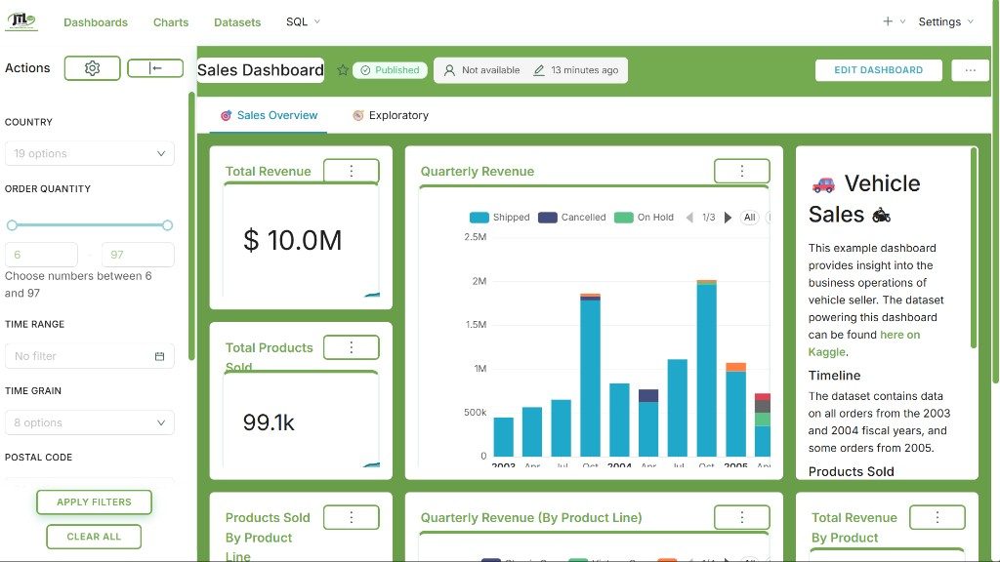
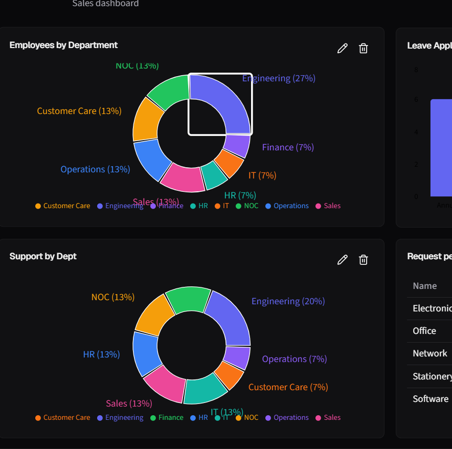
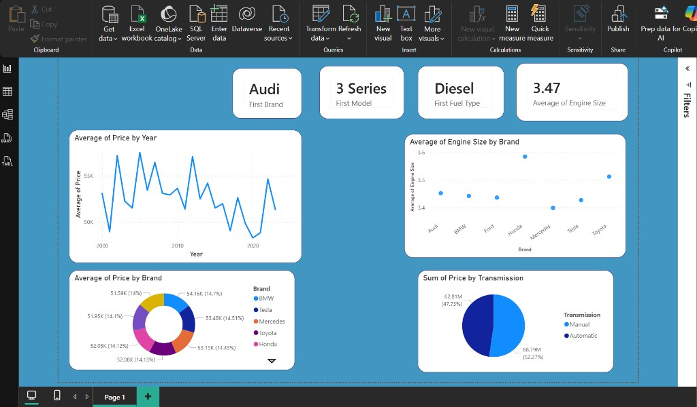
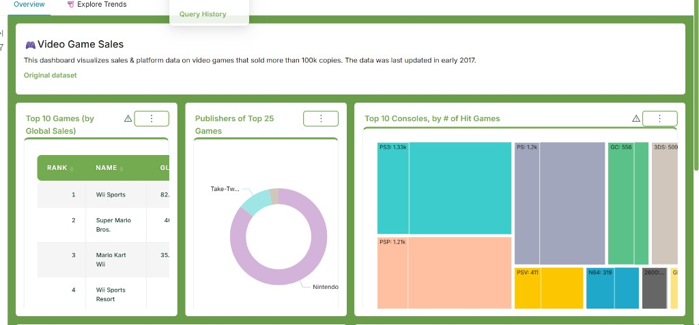
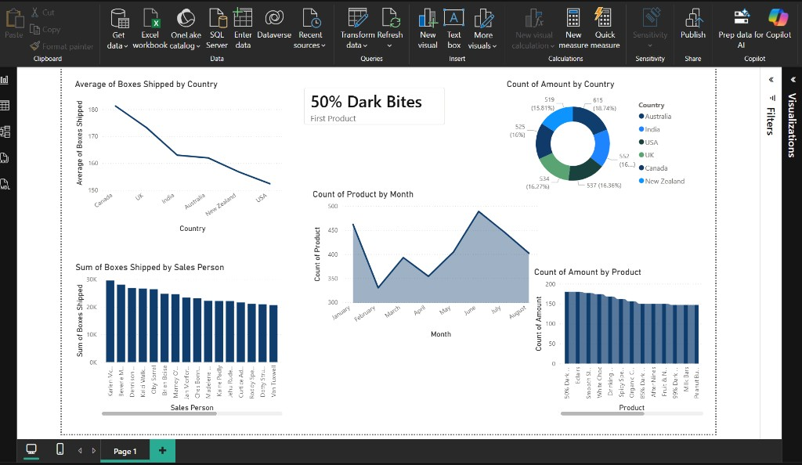
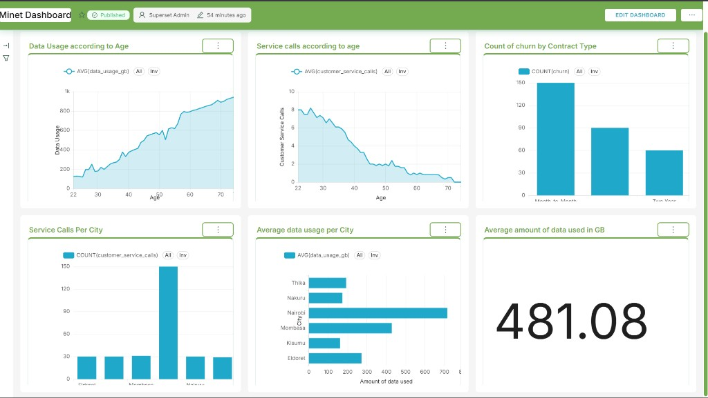
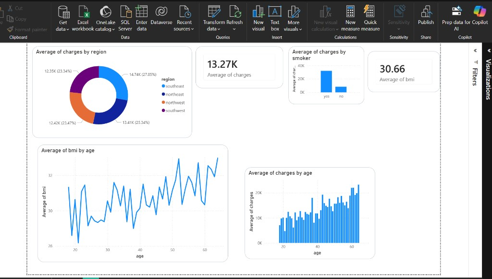
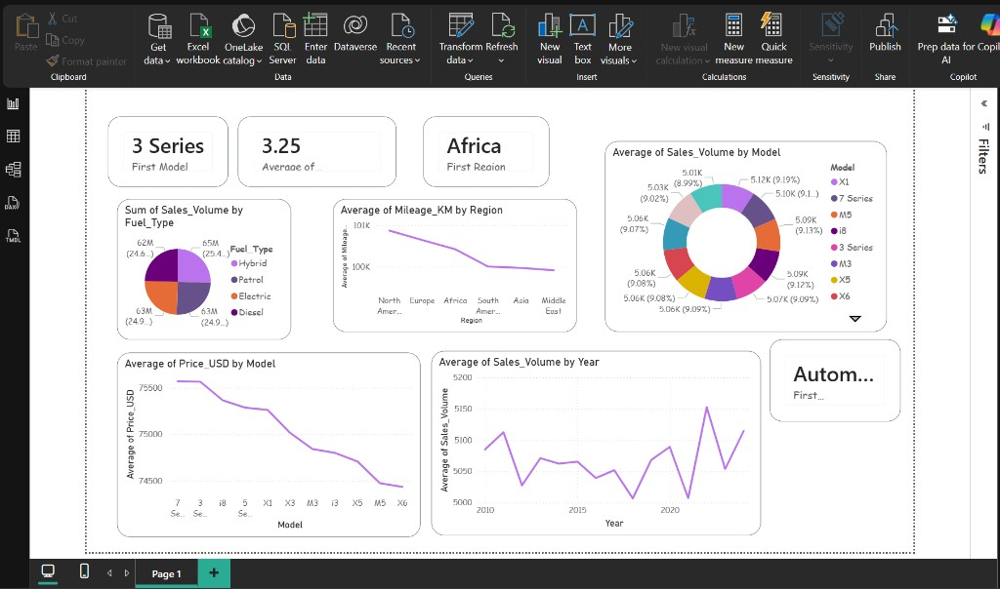
Validation and explainability visuals used to assess model quality, confidence reliability, calibration behavior, and predictor influence.
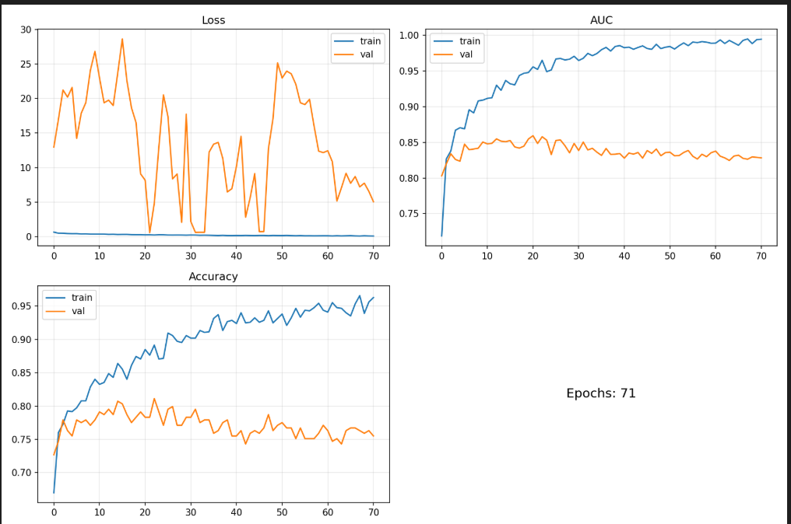
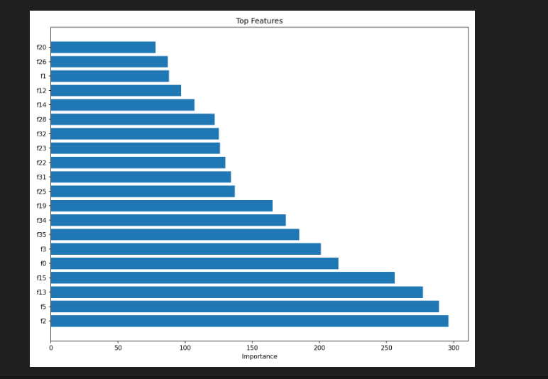
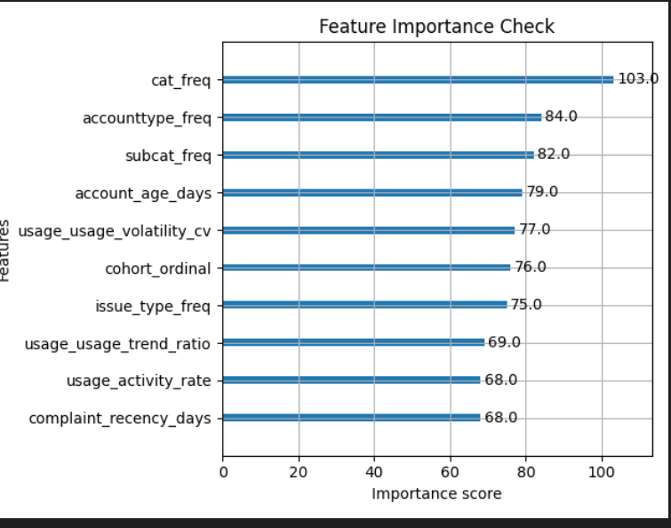
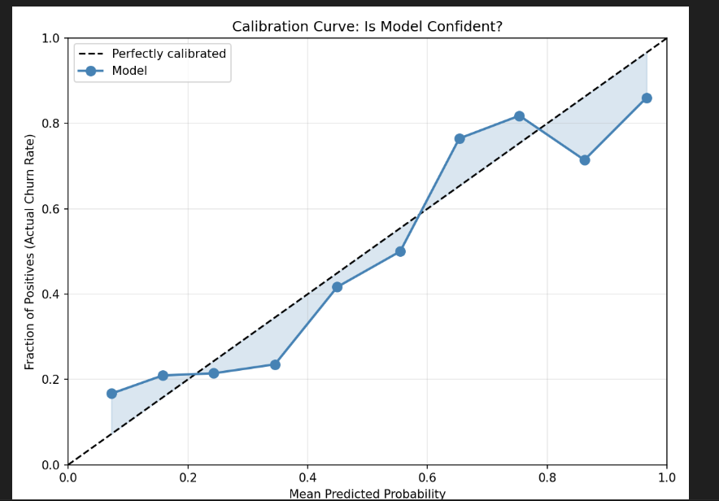
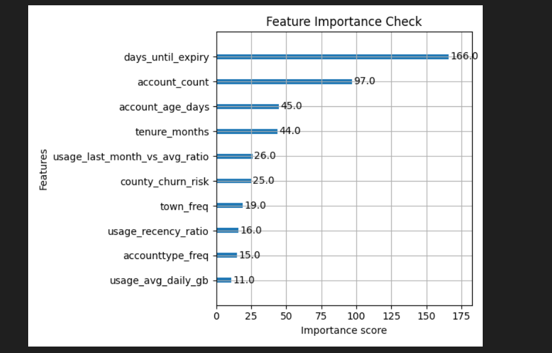
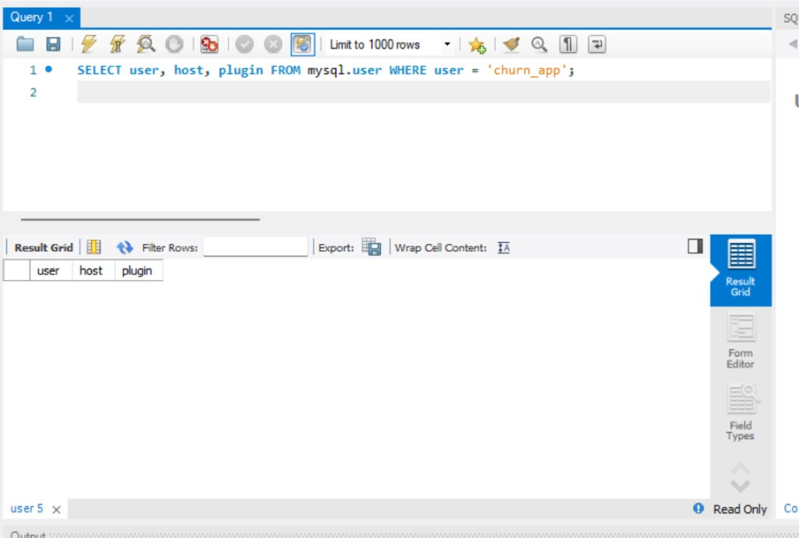
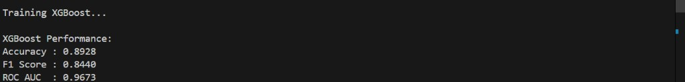
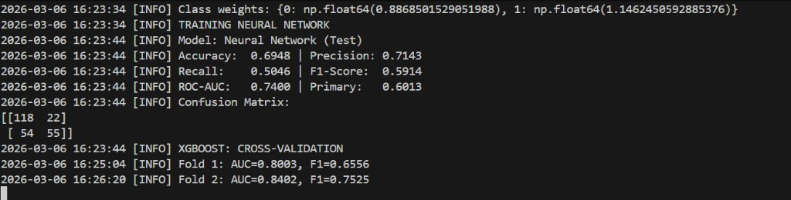
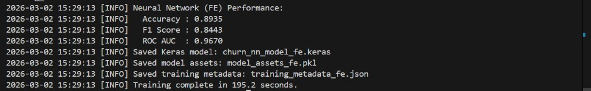
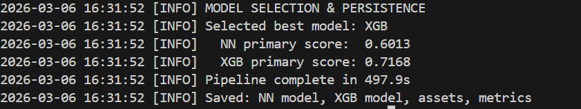
Share your project details and I will get back to you to discuss data science, AI, and machine learning solutions.